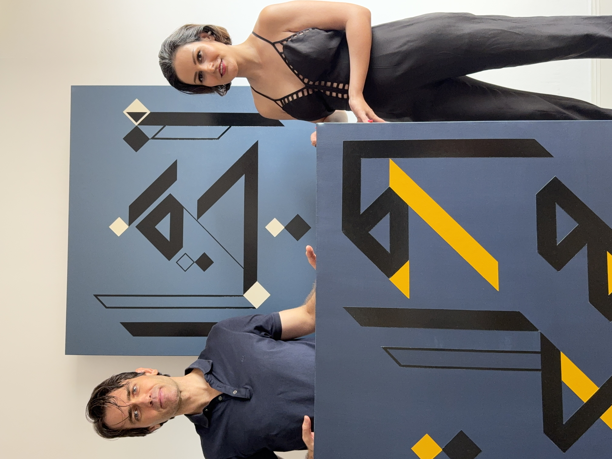

Interactive paintings that transform touch into sound.
Overview
Sounding Canvas is a series of Interactive Paintings created by the artistic duo Perceptrum, the Duo is composed by the Iranian Artist and Stage Designer Dora Motèque and the Italian Physicist, Sound Engineer and Musician Luciano Ciamarone

Two paired Sounding Canvases; "Calligraph of Absence" and "Rhythmic Interference"
Our Interactive Paintings are Interlocutors that engage in a non-verbal communication with the people who touch them.
Visually, they are the result of Dora’s semiographic research, in which she fuses Persian characters with elements of musical notation. The shapes are invisibly and elegantly equipped with sensors that detect the user’s gestures and forward the information to a central “Electronic Brain” which, using AI and sophisticated algorithms, generates sounds in response to the history of interactions and their intrinsic meanings. Two or more Sounding Canvases can also be connected over the Internet, enabling emotional and perceptual communication between human beings who interact with them locally. Each person can “feel” the presence of others through their local Sounding Canvas, which constantly receives “touch events” from its peer canvases, even if they are thousands of kilometers away.
In our Artist Statement, we describe our creative process and our mission. We believe that humanity’s ability to understand one another is key to our future as a species. Through our art, we invite people to nurture their empathy, perception, and relational awareness. We believe that relationship lies at the core of what we call consciousness, intelligence, and ultimately, life. We are what emerges from the framework of our connections.
The power of the Sounding Canvas series lies in their simplicity: they are “just” paintings, neat, clean, precise, and effortless to interact with. They require no screens, projectors, lights, cameras, or other technical devices. These are truly Augmented Paintings: the technology is invisible, fully embedded within the work. They are easy to install and easy to experience. The technology remains transparent; the people are the real protagonists of the Sounding Canvas experience.
At the end of this webpage there is a video description of the project, you are also invited to check our Youtube Playlists
The Story Behind The Vision
From a very young age, Dora had a peculiar way of seeing the world. While other children might have rushed past a broken toy or a scuffed chair, she noticed their “feelings.” If she sensed that an object had been treated roughly, or left abandoned, she would gently pick it up, stroke it, and whisper to it. She believed that everything, every toy, every cup, every piece of paper, carried a kind of soul, and that it could be comforted by kindness.
Years later, that childhood intuition became the seed for Sounding Canvas. Dora envisioned paintings that weren’t just meant to be seen, but touched, caressed, and engaged with. The canvases would respond only to gentle, attentive gestures, transforming touch into sound. In this way, the artwork itself could “open up” and communicate its feelings to the person interacting with it.
Just as she had learned as a child, Dora understood that true dialogue, whether with people or with objects, requires patience, care, and empathy. Only with kindness can another being, human or not, feel safe enough to reveal their inner voice. Sounding Canvas is a celebration of that philosophy: it asks viewers not to strike or prod, but to engage with the art as they would with a friend, through gentle, thoughtful caresses that awaken a responsive, living soundscape.
Novelty
SoundingCanvas represents a unique convergence of visual art, tactile interaction, and sound synthesis. Unlike traditional interactive artworks that rely on pre-programmed responses or isolated media, SoundingCanvas integrates capacitive sensing, real-time audio manipulation, and semantic image-sound mapping into a single, coherent system.
At its core, SoundingCanvas transforms static visual elements into dynamic sonic expressions. Touching the canvas activates a complex chain of processes: sensor data is interpreted in real time, user interaction is learned and modeled through adaptive systems (such as Markov models and neural networks), and the result is expressed sonically using both pre-recorded audio and signal processing techniques.
What sets SoundingCanvas apart is not only its technological integration but its conceptual depth. The project uses techniques from artificial intelligence, physics-inspired decision making and computer vision to create a new semantic space where visual stimuli and audio output are interlinked. This allows each canvas to behave like a living instrument, one that reacts to human presence and evolves through interaction.
Additionally, the installation is designed for autonomy and robustness, capable of operating continuously with automatic startup, thermal protection, and minimal user intervention. This makes SoundingCanvas suitable for gallery exhibitions and long-term deployments, without compromising artistic complexity.
SoundingCanvas is more than a fusion of disciplines,it is a redefinition of the canvas itself: not as a surface to observe, but as an interface to experience, question, and transform.
A Social Artwork
SoundingCanvas is not just a tactile and sonic artwork , it is a living, social interface. Each canvas can communicate in real time with others, creating a poetic bridge between distant spaces and people.
This is enabled by a networked system where each unique canvas acts as a module in a network. When canvases are linked, they engage in a Modular Dialogue, a dynamic conversation in which the gestures on one canvas influence the sonic output of another.
On the concept of "Modular Dialogue" and "Variations" there is a dedicated page that the reader is strongly invited to visit: VISIT IT HERE
Imagine a mother in Italy, on a quiet Sunday evening. She gently touches her canvas, sending a signal across the network. In that moment, her son’s canvas in the United States and her daughter’s in Germany come to life , playing soft, familiar sounds that signal her presence. Touched by the gesture, the children respond: each places a hand on their own canvas, and the mother’s artwork sings back to her, echoing their affection across continents.
This is the essence of SoundingCanvas: a sensory dialogue that transcends geography, a way of saying “I’m here” without words, through sound, space, and touch.